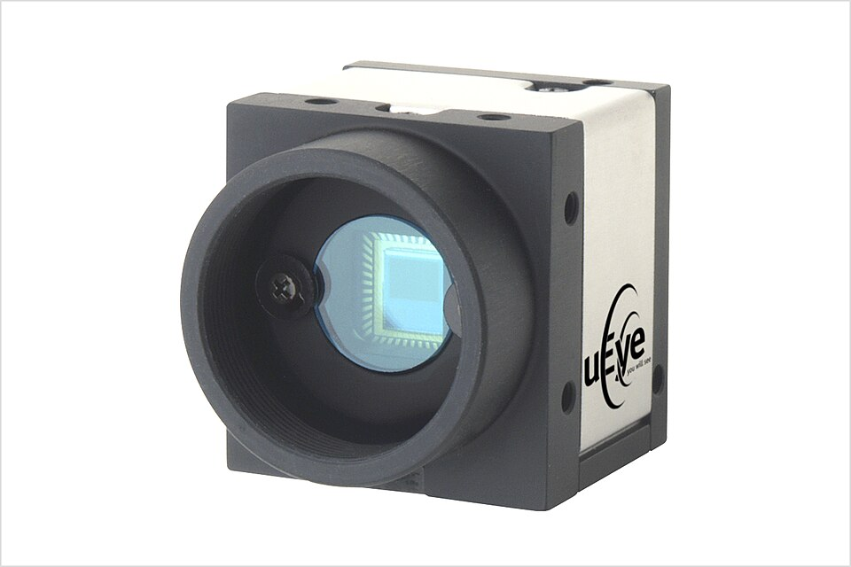

Build a 2D inspection station with controlled light
Two similar washers move through a fixture. Use a fixed camera and a good background to measure their outside diameter, then change the lighting and see what should cause the system to reject a frame.
Own phone or webcam, plain matte background, two washers, ruler or caliper, fixed support and a lamp. Use a still image and manual pixel coordinates first. OpenCV is optional.
Put the camera, target and light in repeatable positions
A machine-vision station has a camera, lens, light and fixture. Fix the camera so it looks square to the target at a known distance. Put the ruler in the same plane as the washer. A backlight creates a clean silhouette. Side lighting may reveal dents while making the silhouette uneven.

Photo by Lg123456, scaled for the course. Original · CC BY-SA 4.0.


Photo by Lexington Medical, Inc, scaled for the course. Original · CC0.

Start with a straight-on still image. Mark a 20.0 mm distance on the ruler and record its pixel width in the image. A ruler mark 200 px wide gives 10 px/mm in that plane. Capture a second picture after moving the camera or lifting the washer. Check whether that conversion still fits.
Measure three frames before setting thresholds
Measure the outside width of each washer. At 10 px/mm, 120 px means 12.0 mm and 159 px means 15.9 mm. Use a physical reference to verify. Example training rule: accept 15.5–16.5 mm when one clearly visible target lies fully inside the region of interest. Reject partial, blended or missing outlines.
| Frame | Width | Decision for the example rule |
|---|---|---|
| Clear isolated large washer | 159 px | Accept, 15.9 mm |
| Clear smaller washer | 120 px | Reject, 12.0 mm |
| Two touching washers | 252 px combined | Reject the frame. Separate the objects and take it again. |
| Glare cuts one edge | Apparent width 146 px | Reject or reacquire under suitable lighting |
Watch on YouTube · Pause when the thresholded image becomes contours. Compare the original and the mask before treating a contour as the washer. Contour Detection using OpenCV: A Comprehensive Guide · LearnOpenCV.
Inspect your own image in the browser
Photograph a dark washer on a light background. First use the ruler photo to calculate pixels per millimetre at the camera’s original resolution. Then crop a second photo to the part area without resizing it. Keep the ruler out of that crop. Try one clear washer, two touching parts, glare and a part cut off at the edge. The trainer processes the file in this tab.
White on the mask shows pixels darker than the selected cutoff. The trainer groups connected pixels, ignores tiny marks and compares the width of one remaining silhouette against the example rule. It marks multiple or clipped shapes for review. Two touching washers can merge into one wide shape, so inspect the mask as well as the decision. Keep the original pixel scale when exporting the crop.
Move from manual measurement to OpenCV
- Crop the fixed region of interest. Convert to grayscale and threshold the dark silhouette against the light background. Mark the two physical ruler positions outside the part region.
- Use OpenCV’s external contours and compute a bounding box. Check that exactly one candidate is present above your noise area threshold and that its box stays away from the crop border.
- Save both the original and the mask. Vary exposure and lighting and compare accepted and rejected frames. If the shape changes orientation, use a better shape measurement or constrain it with the fixture.
The OpenCV examples give working commands for thresholding and retrieving the contours. OpenCV thresholding · OpenCV contours.
Record the camera settings and the acceptance rule
Keep one accepted image with its measurements, one out-of-spec part, two unusable frames and independent measurements from the caliper. Include focus, lamp position and working distance so someone can reproduce the setup.